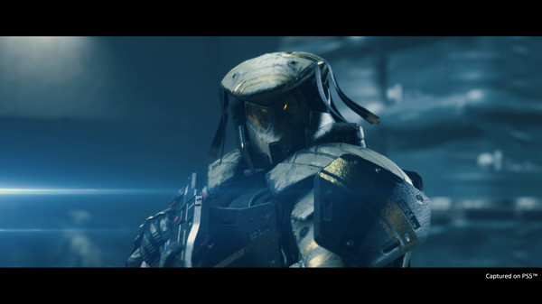
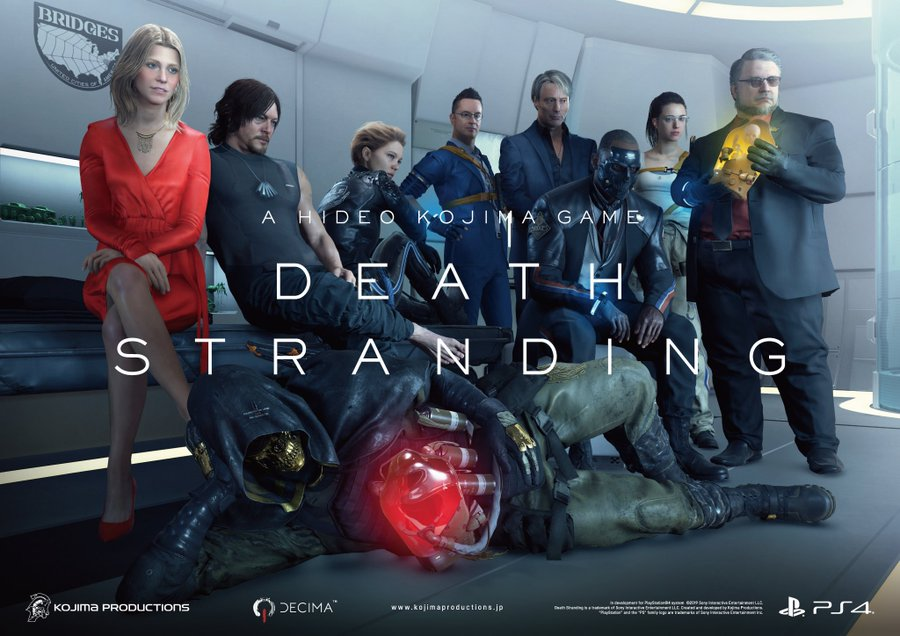
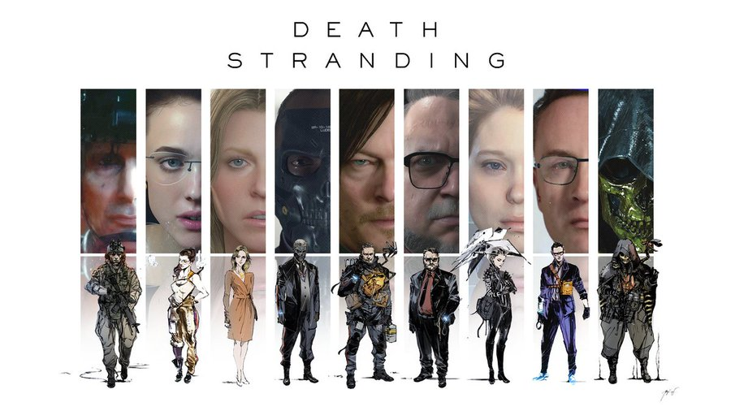
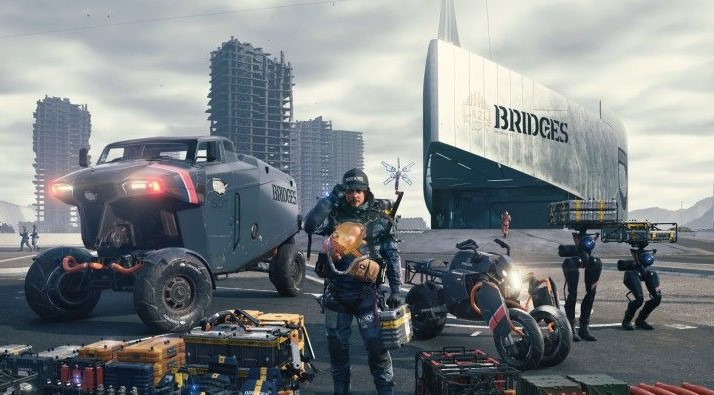

The Death Stranding was a cataclysmic event in which ghostly “Beached Things,” or BTs, suddenly appeared in the world of the living, triggering a massive amount of simultaneous explosion-like “voidouts” all over the world that eradicated everything caught up in them, leaving nothing but craters in their wake
Death Stranding has some incredible characters... but not all of them are really worthwhile.
Amelie, as Sam jokes, is basically Princess Peach waiting for him,Mario, to save the day. Soon after it is revealed she wasn’t adamsel in distress at all, but actually a cosmic being sentfrom nowhere in order to destroy humanity.That’s not the reason why she is on the lowest part of the list,as villains can be quite compelling.Unfortunately, she’s neither good nor bad.She has the personality of someone likeDr. Manhattan who exists,but doesn’t really have anything to say.When she does talk it’s rather long-winded and pointless.
Die-Hardman falls in a similar category to Amelie. For most of the game, he is just a voice instructingSam what to do without feeling. Eventually,his character does have a payoff with an emotional sobscene straight from Dawson’s Creek, but it is too littletoo late for the audience to care. Even when he is unmaskedit didn’t set anything off. He’s just a normal dude withouta compelling backstory, again, until the final pointof the game. We had such high hopes based on theridiculous name alone
Yes, it is pretty sad but true. The main character of the game is rather dull. Sam does grow as a person and is “different” by the end, but only marginally so. He didn’t like showing affection, or letting people embrace him physically in the beginning. He leans off that eventually, but still doesn’t show that much emotion. Even when he cares for BB, or Lou as he eventually names her, it doesn’t come across as genuine. Probably the worst part is that he barely talks in the game at all and is more a piece of flesh for people to talk at.
Sam wouldn’t be anything without Lou so in that case, she has to be a better character. She is just as silent as he is as should be the case for a baby in a jar.Yet she somehow still managed to bring a smile to our faces with fun little animations during cutscenes, or giving us a thumbs up with her machine arm after a BT attack. We also loved the fact she could make heart bubbles as ridiculous as that sounds. If there is a sequel, we hope she gets to be the star kind of like how Ellie is becoming the lead in The Last of Us Part II.
Like Die-Hardman, for a good majority of the game Mama is just there to dish out information on Sam’s equipment as a hologram. Once they meet, our opinions started to change. Her attachment to her dead child, now a BT, emotionally tugged at our heartstrings. The fact that she would rather stay solitary than leave her was crazy. The decision she makes to cut the cord later was rough. That tear tech is on point. This means she dies as well in order for her twin sister, Lockne, to absorb Mama to become whole again. Yes, it is weird, but we got the feels.
“I may be Fragile, but I’m not that fragile.”This is a line she repeats throughout the game as sort of a mantra to herself.It is to remind herself that she is strong underneath, despite the name.At first, it seemed like this was meant as a dig toward women...that they can’t be as strong as men and are often thought of as more fragile. Then we watched the scene where she ruins her body,except her face, aging it in the Timefall, in order to save a city.Then the name and meaning really clicked for us. She is indeed Fragile,but not that fragile.
Deadman, along with Fragile, are the two adults that made Sam change.Deadman could also be mistaken for an info dumper like Die-Hardmanexcept for the fact that he actually tries to continually make a bond with Sam. Deadman trusts him and actually tries to protecthim and Lou by filling him in on secrets even though it might gethim in trouble. That payoff at the end when he finally gets tohug Sam was such a great and well-deserved moment on top of thefact that he basically told Sam how to save Lou.
In order to find his family in the afterlife, Heartman induces cardiac arrestevery twenty-one minutes in order tocomb Beach after Beach looking for his family three minutes at a time.Despite Heartman’s trauma, he remains an upbeat guy with his mind on hisfamily and on his mission.He is never discouraged and keeps fighting the good fight,even giving Sam dozens of enthusiastic thumbs ups. He really is the heart of the game
See? We said bad guys could rise to the occasion, and boy what a villain Higgswas. Every second he was on screen was pure magic thanks to his voice actor,Troy Baker, chewing up the scene with vigor. He is the exact kind ofvillain we love to see in a Kojima game: twisted and weird.From wearing two masks to licking faces, Higgs is one heck of a ride.
The better “villain” and the best character in the game is Cliff Unger.This is thanks in no small part to Mads Mikkelsen giving it 110%. We were worried he wouldn’t have much to play save for those BB memories. When he arose from the tar in that first war nightmare, ooo, we were pumped.He was equal parts creepy and cool. The best thing about him is that he had a reason why he was acting crazy and seeing this arc through different perspectives and moments in his life cemented Cliff as our favorite character in Death Stranding.
if you over on this text you will know the end of death stranding!